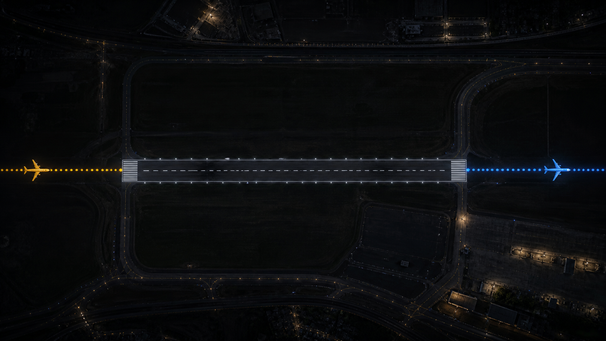

Lisbon Finals started as one station, on one terrace, under one flight path. The Finals Network is what happens if a few more people, elsewhere, under their own flight paths, build one too. It's still mostly a plan. If that sounds like your kind of trouble, keep reading.
Read the checklist ↓Five components are non-negotiable. Everything past that is your call, and changes the total below.
Rough numbers, not a quote. Tap the optional cards above. Exact costs get confirmed before you order anything.
We're not after a weekend project. A node takes real time to install and keep calibrated, and real money before the first flight is ever logged. What we are after: someone who already looks up every time something loud goes over the house. If you know your ceiling's rattle by callsign, you're closer to qualified than you think.
Proximity to an airport matters, but it isn't the deciding factor. Complementary coverage matters more than proximity alone. A different runway, a different heading, the far side of the same approach: that's what actually extends the record.

Five lines by email, nothing more formal than that.
Not ready for the full build? There are other ways to get involved.